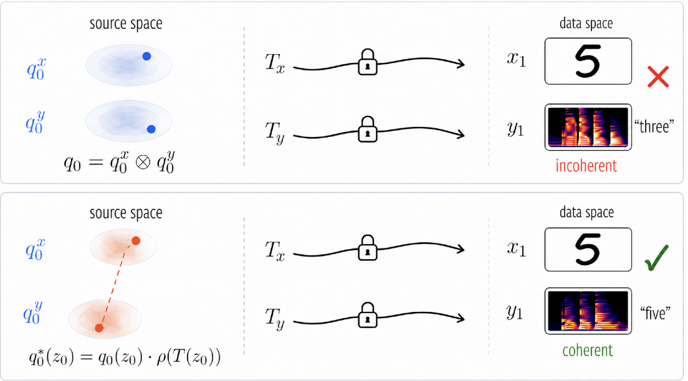
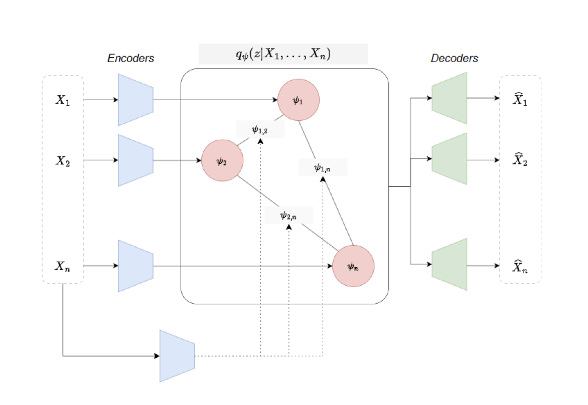

I'm an AI Engineer at Michelin leading the design and deployment of applied AI systems in complex, real-world environments. My work spans the full lifecycle, from problem framing and value definition to production and adoption. In recent years, I have focused on integrating AI within mining operations and aircraft trajectory optimization. I work across diverse data modalities (sensor, geospatial, LiDAR, image, Mesh ...)
I hold a Master of Engineering from IMT Atlantique in France and a B.Sc in Pure Mathematics from the University of Western Brittany. My work blends deep mathematical grounding with pragmatic engineering.
I'm also the founder of MAIR (Moroccans in AI Research), a global network driving collaboration, mentorship, and visibility for Moroccan AI talent worldwide.
Publications




Teaching
- Advanced Deep Learning — 5A Polytech Clermont-Ferrand · 2024–2025
- Statistics and Data Analysis for Performance Analysts — Michelin R&D Center Ladoux · 2023–2026
- 2025 — Shaimaa Abu Yousuf, Engineering Intern
Detection Using Transfer Learning for Accurate Classification - 2024/2025 — Rémy Vallot, PhD Candidate · ENS Paris-Saclay
Acceleration Using ML Methods - 2023 — Moad Yachouti, Engineering Intern · Université Paris-Saclay (now PhD at Polytechnique)
Explainable AI in Predictive ML Models
Miscellaneous
- My article on Medium: "Why Moroccan AI Researchers Need a Community, And How MAIR Is Building It" [Read article]
- My talk on radio: AI Research in Morocco. [Listen here]